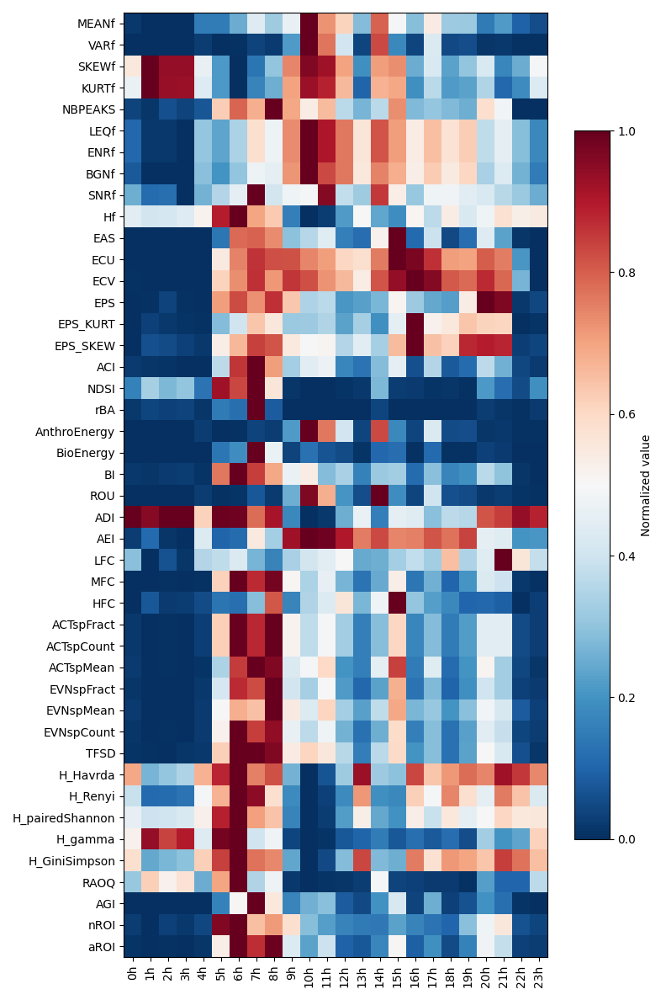

Note
Go to the end to download the full example code.
Extract acoustic indices from audio recordings
Acoustic indices can summarize aspects of the acoustic energy distribution in audio recordings and are widely used to characterize animal acoustic communities[1-3]. In this example, we will see how to eficiently compute multiple acoustic indices, and present basics post-processing posibilities. The audio recordings used in this example can be downloaded from the open GitHub repository (https://github.com/scikit-maad/scikit-maad/tree/production/data).
# sphinx_gallery_thumbnail_path = './_images/sphx_glr_plot_extract_alpha_indices_002.png'
Load required modules
import matplotlib.pyplot as plt
import pandas as pd
import os
from maad import sound, features
from maad.util import (
date_parser, plot_correlation_map,
plot_features_map, plot_features, false_Color_Spectro
)
Set Variables
We list all spectral and temporal acoustic indices that will be computed.
SPECTRAL_FEATURES=['MEANf','VARf','SKEWf','KURTf','NBPEAKS','LEQf',
'ENRf','BGNf','SNRf','Hf', 'EAS','ECU','ECV','EPS','EPS_KURT','EPS_SKEW','ACI',
'NDSI','rBA','AnthroEnergy','BioEnergy','BI','ROU','ADI','AEI','LFC','MFC','HFC',
'ACTspFract','ACTspCount','ACTspMean', 'EVNspFract','EVNspMean','EVNspCount',
'TFSD','H_Havrda','H_Renyi','H_pairedShannon', 'H_gamma', 'H_GiniSimpson','RAOQ',
'AGI','nROI','aROI'
]
TEMPORAL_FEATURES=['ZCR','MEANt', 'VARt', 'SKEWt', 'KURTt',
'LEQt','BGNt', 'SNRt','MED', 'Ht','ACTtFraction', 'ACTtCount',
'ACTtMean','EVNtFraction', 'EVNtMean', 'EVNtCount'
]
We parse the directory were the audio dataset is located in order to get a df with date and fullfilename. As the data were collected with a SM4 audio recording device we set the dateformat agument to ‘SM4’ in order to be able to parse the date from the filename. In case of Audiomoth, the date is coded as Hex in the filename. The path to the audio dataset is “../../data/indices/”.
df = date_parser("../../data/indices/", dateformat='%Y%m%d_%H%M%S', verbose=True)
# remove index => Date becomes a column instead of an index. This is
# required as df_audio_ind, df_spec_ind and df_spec_ind_per_bin do not have
# date as index. Then we can concatenate all the dataframe.
#df = df.reset_index()
File: S4A03895_20190522_041500.wav
File: S4A03895_20190522_141500.wav
File: S4A03895_20190522_073000.wav
File: S4A03895_20190522_173000.wav
File: S4A03895_20190522_010000.wav
File: S4A03895_20190522_014500.wav
File: S4A03895_20190522_110000.wav
File: S4A03895_20190522_114500.wav
File: S4A03895_20190522_213000.wav
File: S4A03895_20190522_180000.wav
File: S4A03895_20190522_184500.wav
File: S4A03895_20190522_080000.wav
File: S4A03895_20190522_084500.wav
File: S4A03895_20190522_221500.wav
File: S4A03895_20190522_203000.wav
File: S4A03895_20190522_094500.wav
File: S4A03895_20190522_090000.wav
File: S4A03895_20190522_194500.wav
File: S4A03895_20190522_190000.wav
File: S4A03895_20190522_231500.wav
File: S4A03895_20190522_151500.wav
File: S4A03895_20190522_051500.wav
File: S4A03895_20190522_104500.wav
File: S4A03895_20190522_100000.wav
File: S4A03895_20190522_004500.wav
File: S4A03895_20190522_000000.wav
File: S4A03895_20190522_163000.wav
File: S4A03895_20190522_063000.wav
File: S4A03895_20190522_223000.wav
File: S4A03895_20190522_211500.wav
File: S4A03895_20190522_071500.wav
File: S4A03895_20190522_171500.wav
File: S4A03895_20190522_024500.wav
File: S4A03895_20190522_020000.wav
File: S4A03895_20190522_124500.wav
File: S4A03895_20190522_120000.wav
File: S4A03895_20190522_043000.wav
File: S4A03895_20190522_143000.wav
File: S4A03895_20190522_161500.wav
File: S4A03895_20190522_061500.wav
File: S4A03895_20190522_153000.wav
File: S4A03895_20190522_053000.wav
File: S4A03895_20190522_130000.wav
File: S4A03895_20190522_134500.wav
File: S4A03895_20190522_030000.wav
File: S4A03895_20190522_034500.wav
File: S4A03895_20190522_233000.wav
File: S4A03895_20190522_201500.wav
File: S4A03895_20190522_193000.wav
File: S4A03895_20190522_093000.wav
File: S4A03895_20190522_200000.wav
File: S4A03895_20190522_204500.wav
File: S4A03895_20190522_003000.wav
File: S4A03895_20190522_103000.wav
File: S4A03895_20190522_060000.wav
File: S4A03895_20190522_064500.wav
File: S4A03895_20190522_160000.wav
File: S4A03895_20190522_164500.wav
File: S4A03895_20190522_031500.wav
File: S4A03895_20190522_131500.wav
File: S4A03895_20190522_174500.wav
File: S4A03895_20190522_170000.wav
File: S4A03895_20190522_074500.wav
File: S4A03895_20190522_070000.wav
File: S4A03895_20190522_113000.wav
File: S4A03895_20190522_013000.wav
File: S4A03895_20190522_121500.wav
File: S4A03895_20190522_021500.wav
File: S4A03895_20190522_083000.wav
File: S4A03895_20190522_183000.wav
File: S4A03895_20190522_214500.wav
File: S4A03895_20190522_210000.wav
File: S4A03895_20190522_054500.wav
File: S4A03895_20190522_050000.wav
File: S4A03895_20190522_154500.wav
File: S4A03895_20190522_150000.wav
File: S4A03895_20190522_033000.wav
File: S4A03895_20190522_133000.wav
File: S4A03895_20190522_001500.wav
File: S4A03895_20190522_101500.wav
File: S4A03895_20190522_234500.wav
File: S4A03895_20190522_230000.wav
File: S4A03895_20190522_191500.wav
File: S4A03895_20190522_091500.wav
File: S4A03895_20190522_220000.wav
File: S4A03895_20190522_224500.wav
File: S4A03895_20190522_081500.wav
File: S4A03895_20190522_181500.wav
File: S4A03895_20190522_123000.wav
File: S4A03895_20190522_023000.wav
File: S4A03895_20190522_140000.wav
File: S4A03895_20190522_144500.wav
File: S4A03895_20190522_040000.wav
File: S4A03895_20190522_044500.wav
File: S4A03895_20190522_111500.wav
File: S4A03895_20190522_011500.wav
Batch compute acoustic indices on the audio dataset
df_indices = pd.DataFrame()
df_indices_per_bin = pd.DataFrame()
for index, row in df.iterrows() :
# get the full filename of the corresponding row
fullfilename = row['file']
# Save file basename
path, filename = os.path.split(fullfilename)
print ('\n**************************************************************')
print (filename)
#### Load the original sound (16bits) and get the sampling frequency fs
try :
wave,fs = sound.load(filename=fullfilename, channel='left', detrend=True, verbose=False)
except:
# Delete the row if the file does not exist or raise a value error (i.e. no EOF)
df.drop(index, inplace=True)
continue
""" =======================================================================
Computation in the time domain
========================================================================"""
# Parameters of the audio recorder. This is not a mandatory but it allows
# to compute the sound pressure level of the audio file (dB SPL) as a
# sonometer would do.
S = -35 # Sensbility microphone-35dBV (SM4) / -18dBV (Audiomoth)
G = 26+16 # Amplification gain (26dB (SM4 preamplifier))
# compute all the audio indices and store them into a DataFrame
# dB_threshold and rejectDuration are used to select audio events.
df_audio_ind = features.all_temporal_alpha_indices(
s=wave,
fs=fs,
gain=G,
sensibility=S,
dB_threshold=3,
rejectDuration=0.01,
verbose=False,
display=False
)
""" =======================================================================
Computation in the frequency domain
========================================================================"""
# Compute the Power Spectrogram Density (PSD) : Sxx_power
Sxx_power,tn,fn,ext = sound.spectrogram (
x=wave,
fs=fs,
window='hann',
nperseg=1024,
noverlap=1024//2,
verbose=False,
display=False,
savefig=None
)
# compute all the spectral indices and store them into a DataFrame
# flim_low, flim_mid, flim_hi corresponds to the frequency limits in Hz
# that are required to compute somes indices (i.e. NDSI)
# if R_compatible is set to 'soundecology', then the output are similar to
# soundecology R package.
# mask_param1 and mask_param2 are two parameters to find the regions of
# interest (ROIs). These parameters need to be adapted to the dataset in
# order to select ROIs
df_spec_ind, df_spec_ind_per_bin = features.all_spectral_alpha_indices(
Sxx_power=Sxx_power,
tn=tn,
fn=fn,
flim_low=[0,1500],
flim_mid=[1500,8000],
flim_hi=[8000,20000],
gain=G,
sensitivity=S,
verbose=False,
R_compatible='soundecology',
mask_param1=6,
mask_param2=0.5,
display=False)
""" =======================================================================
Create a dataframe
========================================================================"""
# First, we create a dataframe from row that contains the date and the
# full filename. This is done by creating a DataFrame from row (ie. TimeSeries)
# then transposing the DataFrame.
df_row = pd.DataFrame(row)
df_row =df_row.T
df_row.index.name = 'Date'
df_row = df_row.reset_index()
# create a row with the different scalar indices
row_scalar_indices =pd.concat(
[df_row, df_audio_ind, df_spec_ind],
axis=1
)
# add the row with scalar indices into the df_indices dataframe
df_indices = pd.concat([df_indices, row_scalar_indices])
# create a row with the different vector indices
row_vector_indices = pd.concat(
[df_row, df_spec_ind_per_bin],
axis=1)
# add vector indices into the df_indices_per_bin dataframe
df_indices_per_bin = pd.concat([df_indices_per_bin, row_vector_indices])
# # Set back Date as index
df_indices = df_indices.set_index('Date')
df_indices_per_bin = df_indices_per_bin.set_index('Date')
**************************************************************
S4A03895_20190522_000000.wav
**************************************************************
S4A03895_20190522_001500.wav
**************************************************************
S4A03895_20190522_003000.wav
**************************************************************
S4A03895_20190522_004500.wav
**************************************************************
S4A03895_20190522_010000.wav
**************************************************************
S4A03895_20190522_011500.wav
**************************************************************
S4A03895_20190522_013000.wav
**************************************************************
S4A03895_20190522_014500.wav
**************************************************************
S4A03895_20190522_020000.wav
**************************************************************
S4A03895_20190522_021500.wav
**************************************************************
S4A03895_20190522_023000.wav
**************************************************************
S4A03895_20190522_024500.wav
**************************************************************
S4A03895_20190522_030000.wav
**************************************************************
S4A03895_20190522_031500.wav
**************************************************************
S4A03895_20190522_033000.wav
**************************************************************
S4A03895_20190522_034500.wav
**************************************************************
S4A03895_20190522_040000.wav
**************************************************************
S4A03895_20190522_041500.wav
**************************************************************
S4A03895_20190522_043000.wav
**************************************************************
S4A03895_20190522_044500.wav
**************************************************************
S4A03895_20190522_050000.wav
**************************************************************
S4A03895_20190522_051500.wav
**************************************************************
S4A03895_20190522_053000.wav
**************************************************************
S4A03895_20190522_054500.wav
**************************************************************
S4A03895_20190522_060000.wav
**************************************************************
S4A03895_20190522_061500.wav
**************************************************************
S4A03895_20190522_063000.wav
**************************************************************
S4A03895_20190522_064500.wav
**************************************************************
S4A03895_20190522_070000.wav
**************************************************************
S4A03895_20190522_071500.wav
**************************************************************
S4A03895_20190522_073000.wav
**************************************************************
S4A03895_20190522_074500.wav
**************************************************************
S4A03895_20190522_080000.wav
**************************************************************
S4A03895_20190522_081500.wav
**************************************************************
S4A03895_20190522_083000.wav
**************************************************************
S4A03895_20190522_084500.wav
**************************************************************
S4A03895_20190522_090000.wav
**************************************************************
S4A03895_20190522_091500.wav
**************************************************************
S4A03895_20190522_093000.wav
**************************************************************
S4A03895_20190522_094500.wav
**************************************************************
S4A03895_20190522_100000.wav
**************************************************************
S4A03895_20190522_101500.wav
**************************************************************
S4A03895_20190522_103000.wav
**************************************************************
S4A03895_20190522_104500.wav
**************************************************************
S4A03895_20190522_110000.wav
**************************************************************
S4A03895_20190522_111500.wav
**************************************************************
S4A03895_20190522_113000.wav
**************************************************************
S4A03895_20190522_114500.wav
**************************************************************
S4A03895_20190522_120000.wav
**************************************************************
S4A03895_20190522_121500.wav
**************************************************************
S4A03895_20190522_123000.wav
**************************************************************
S4A03895_20190522_124500.wav
**************************************************************
S4A03895_20190522_130000.wav
**************************************************************
S4A03895_20190522_131500.wav
**************************************************************
S4A03895_20190522_133000.wav
**************************************************************
S4A03895_20190522_134500.wav
**************************************************************
S4A03895_20190522_140000.wav
**************************************************************
S4A03895_20190522_141500.wav
**************************************************************
S4A03895_20190522_143000.wav
**************************************************************
S4A03895_20190522_144500.wav
**************************************************************
S4A03895_20190522_150000.wav
**************************************************************
S4A03895_20190522_151500.wav
**************************************************************
S4A03895_20190522_153000.wav
**************************************************************
S4A03895_20190522_154500.wav
**************************************************************
S4A03895_20190522_160000.wav
**************************************************************
S4A03895_20190522_161500.wav
**************************************************************
S4A03895_20190522_163000.wav
**************************************************************
S4A03895_20190522_164500.wav
**************************************************************
S4A03895_20190522_170000.wav
**************************************************************
S4A03895_20190522_171500.wav
**************************************************************
S4A03895_20190522_173000.wav
**************************************************************
S4A03895_20190522_174500.wav
**************************************************************
S4A03895_20190522_180000.wav
**************************************************************
S4A03895_20190522_181500.wav
**************************************************************
S4A03895_20190522_183000.wav
**************************************************************
S4A03895_20190522_184500.wav
**************************************************************
S4A03895_20190522_190000.wav
**************************************************************
S4A03895_20190522_191500.wav
**************************************************************
S4A03895_20190522_193000.wav
**************************************************************
S4A03895_20190522_194500.wav
**************************************************************
S4A03895_20190522_200000.wav
**************************************************************
S4A03895_20190522_201500.wav
**************************************************************
S4A03895_20190522_203000.wav
**************************************************************
S4A03895_20190522_204500.wav
**************************************************************
S4A03895_20190522_210000.wav
**************************************************************
S4A03895_20190522_211500.wav
**************************************************************
S4A03895_20190522_213000.wav
**************************************************************
S4A03895_20190522_214500.wav
**************************************************************
S4A03895_20190522_220000.wav
**************************************************************
S4A03895_20190522_221500.wav
**************************************************************
S4A03895_20190522_223000.wav
**************************************************************
S4A03895_20190522_224500.wav
**************************************************************
S4A03895_20190522_230000.wav
**************************************************************
S4A03895_20190522_231500.wav
**************************************************************
S4A03895_20190522_233000.wav
**************************************************************
S4A03895_20190522_234500.wav
Display results
After calculating all alpha indices (in audio and spectral domain), let’s have a look to the data. First, plot correlation map of all indices. We set the R threshold to 0 in order to have everything. If you want to focus on highly correlated indices set the threshold to 0.75 for instance.
fig, ax = plot_correlation_map(df_indices, R_threshold=0)
A graphical way to have a quick overview of the indices variation during a 24h cycle consists in plotting heatmaps of indices For a better view, we seperate spectral and audio indices.
plot_features_map(df_indices[SPECTRAL_FEATURES], mode='24h')
plot_features_map(df_indices[TEMPORAL_FEATURES], mode='24h')
# A more classical way to analyse variations of indices consists in plotting
# graphs. We choose to normalize rescale their value between 0 to 1 in order to
# compare their trend during a 24h cycle
fig, ax = plt.subplots(3,2, sharex=True, squeeze=True, figsize=(5,5))
fig, ax[0,0] = plot_features(df_indices[['Hf']],norm=True,mode='24h', now=False, ax=ax[0,0])
fig, ax[0,1] = plot_features(df_indices[['AEI']],norm=True,mode='24h', now=False, ax=ax[0,1])
fig, ax[1,0] = plot_features(df_indices[['NDSI']],norm=True,mode='24h', now=False, ax=ax[1,0])
fig, ax[1,1] = plot_features(df_indices[['ACI']],norm=True,mode='24h', now=False, ax=ax[1,1])
fig, ax[2,0] = plot_features(df_indices[['TFSD']],norm=True,mode='24h', now=False, ax=ax[2,0])
fig, ax[2,1] = plot_features(df_indices[['nROI']],norm=True,mode='24h', now=True, ax=ax[2,1])
- 
Create false color spectrograms with 3 indices
fcs, triplet = false_Color_Spectro(
df=df_indices_per_bin,
indices = [
'KURTt_per_bin',
'EVNspCount_per_bin',
'MEANt_per_bin'
],
reverseLUT=False,
unit='hours',
permut=False,
display=True,
figsize=(4,7)
)
References
Sueur, J., Farina, A., Gasc, A., Pieretti, N., & Pavoine, S. (2014). Acoustic Indices for Biodiversity Assessment and Landscape Investigation. Acta Acustica United with Acustica, 100(4), 772–781. https://doi.org/10.3813/AAA.918757
Buxton, R. T., McKenna, M. F., Clapp, M., Meyer, E., Stabenau, E., Angeloni, L. M., Crooks, K., & Wittemyer, G. (2018). Efficacy of extracting indices from large-scale acoustic recordings to monitor biodiversity: Acoustical Monitoring. Conservation Biology, 32(5), 1174–1184. https://doi.org/10.1111/cobi.13119
Towsey, M., Wimmer, J., Williamson, I., & Roe, P. (2014). The use of acoustic indices to determine avian species richness in audio-recordings of the environment. Ecological Informatics, 21, 110–119. https://doi.org/10.1016/j.ecoinf.2013.11.007
Total running time of the script: (0 minutes 10.934 seconds)